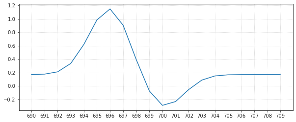
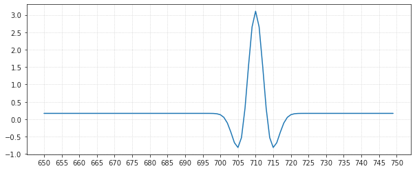
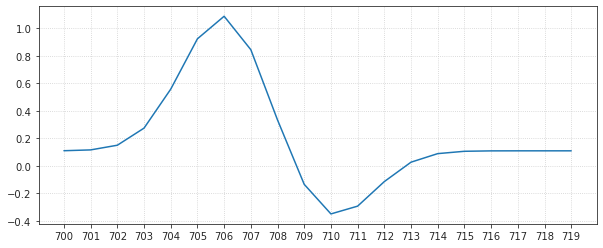
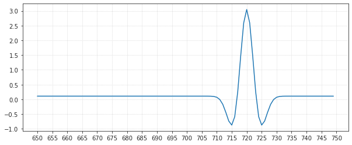
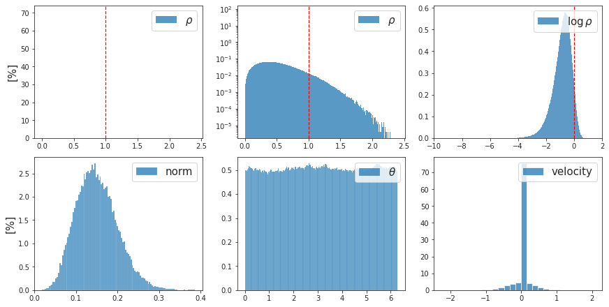
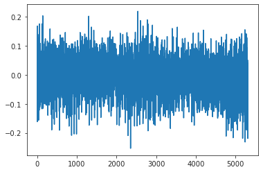
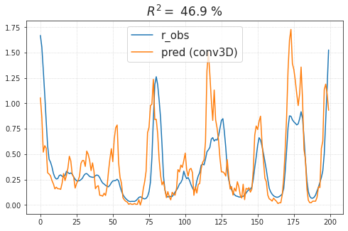
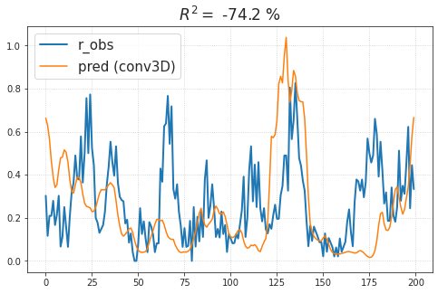

(07) Readout: 3D conv¶
Motivation: Did not work.
# HIDE CODE
import os, sys
from IPython.display import display
# tmp & extras dir
git_dir = os.path.join(os.environ['HOME'], 'Dropbox/git')
extras_dir = os.path.join(git_dir, 'jb-MTMST/_extras')
fig_base_dir = os.path.join(git_dir, 'jb-MTMST/figs')
tmp_dir = os.path.join(git_dir, 'jb-MTMST/tmp')
# GitHub
sys.path.insert(0, os.path.join(git_dir, '_MTMST'))
from vae.train_vae import TrainerVAE, ConfigTrainVAE
from vae.vae2d import VAE, ConfigVAE
from analysis.opticflow import *
from figures.fighelper import *
# warnings, tqdm, & style
warnings.filterwarnings('ignore', category=DeprecationWarning)
from tqdm.notebook import tqdm
from rich.jupyter import print
%matplotlib inline
set_style()
Spatiotemporal \(\Rightarrow\) Linear¶
from base.common import Conv2D, print_num_params, nn
x = torch.randn(500, 128, 4, 4)
x_t = torch.transpose(x, 0, 1)
x_t = x_t.unsqueeze(0)
x_t.size()
torch.Size([1, 128, 500, 4, 4])
kernel_full = nn.Conv3d(128, 1, kernel_size=[12, 4, 4])
y = kernel_full(x_t)
x_t.size(), y.size()
(torch.Size([1, 128, 500, 4, 4]), torch.Size([1, 1, 489, 1, 1]))
print_num_params(kernel_full)
+-------------+------------+
| Module Name | Num Params |
+-------------+------------+
| Conv3d | 24.6 K |
| --- | --- |
+-------------+------------+
x_t = torch.transpose(x, 0, 1)
x_t = x_t.unsqueeze(1)
x_t.size()
torch.Size([128, 1, 500, 4, 4])
kernel_lite = nn.Conv3d(1, 1, kernel_size=[20, 4, 4])
y = kernel_lite(x_t)
x_t.size(), y.size()
(torch.Size([128, 1, 500, 4, 4]), torch.Size([128, 1, 481, 1, 1]))
print_num_params(kernel_lite)
+-------------+------------+
| Module Name | Num Params |
+-------------+------------+
| Conv3d | 321 |
| --- | --- |
+-------------+------------+
Example tker¶
x = np.linspace(0, 20, 21)
y1 = np.exp(-(x - 14)**2 / 5)
y2 = -0.5 * np.exp(-(x - 10)**2 / 5)
y = y1 + y2
fig, ax = create_figure(figsize=(10, 4))
ax.plot(y)
ax.locator_params(axis='x', nbins=24)
ax.grid();
y.shape
(21,)
tker = torch.Tensor(y).unsqueeze(0).unsqueeze(0)
c = nn.Conv1d(1, 1, len(y), padding=10)
c.weight.data = tker
x = torch.zeros(1000)
x[700] = 1
x = x.view(1, 1, -1)
x.size()
torch.Size([1, 1, 1000])
out = c(x)
out = to_np(out.squeeze())
out.shape
(1000,)
fig, ax = create_figure(figsize=(10, 4))
intvl = range(690, 710)
ax.plot(intvl, out[intvl])
ax.locator_params(axis='x', nbins=25)
ax.grid();

x = np.zeros(1000)
x[700:721] = y
x = torch.tensor(x, dtype=torch.float)
x = x.view(1, 1, -1)
x.size()
torch.Size([1, 1, 1000])
out = c(x)
out = to_np(out.squeeze())
out.shape
(1000,)
fig, ax = create_figure(figsize=(10, 4))
intvl = range(650, 750)# range(690, 710)
ax.plot(intvl, out[intvl])
ax.locator_params(axis='x', nbins=25)
ax.grid();

Causal temporal conv¶
tker = torch.Tensor(y).unsqueeze(0).unsqueeze(0)
c = nn.Conv1d(1, 1, len(y), padding=len(y) - 1)
c.weight.data = tker
x = torch.zeros(1000)
x[700] = 1
x = x.view(1, 1, -1)
x.size()
torch.Size([1, 1, 1000])
out = c(x)
out = to_np(out.squeeze())
out.shape
(1020,)
fig, ax = create_figure(figsize=(10, 4))
intvl = range(700, 720)
ax.plot(intvl, out[intvl])
ax.locator_params(axis='x', nbins=25)
ax.grid();

x = np.zeros(1000)
x[700:721] = y
x = torch.tensor(x, dtype=torch.float)
out = c(x.view(1, 1, -1))
out = to_np(out.squeeze())
out.shape
(1020,)
fig, ax = create_figure(figsize=(10, 4))
intvl = range(650, 750)# range(690, 710)
ax.plot(intvl, out[intvl])
ax.locator_params(axis='x', nbins=25)
ax.grid();

x = torch.randn(1000, 128, 4, 4)
x_t = torch.movedim(x, 0, -1)
x_t = x_t.unsqueeze(1)
x_t.size()
torch.Size([128, 1, 4, 4, 1000])
pad = len(y) - 1
kernel_lite = nn.Conv3d(1, 1, kernel_size=[4, 4, len(y)], padding=[0, 0, pad])
out_raw = kernel_lite(x_t)
out = out_raw.squeeze()[..., :-pad].T.contiguous()
out_raw.size(), out.size()
(torch.Size([128, 1, 1, 1, 1020]), torch.Size([1000, 128]))
ftr sizes¶
n_ftrs_enc, n_ftrs_dec = vae.ftr_sizes()
n_ftrs_enc, n_ftrs_dec
({8: 2624, 4: 2688}, {4: 2304, 8: 2624})
x, _ = next(iter(tr.dl_tst))
*_, ftr = vae.xtract_ftr(x, full=True)
torch.cat(ftr['enc'][4], dim=1).size(), torch.cat(ftr['enc'][8], dim=1).size()
(torch.Size([500, 2688, 4, 4]), torch.Size([500, 2624, 8, 8]))
torch.cat(ftr['dec'][4], dim=1).size(), torch.cat(ftr['dec'][8], dim=1).size()
(torch.Size([500, 2304, 4, 4]), torch.Size([500, 2624, 8, 8]))
sum(n_ftrs_enc.values()), sum(n_ftrs_dec.values())
(5312, 4928)
from base.common import nn # Conv2D, print_num_params, nn
from readout.readout import ConvReadout, ConfigReadout
x, _ = next(iter(tr.dl_tst))
*_, ftr = vae.xtract_ftr(x, full=True)
n_ftrs_enc, n_ftrs_dec = vae.ftr_sizes()
cfg = ConfigReadout(n_ftrs_enc, downsample=True)
m = ConvReadout(cfg).to(tr.device)
m.print()
+-------------+------------+ | Module Name | Num Params | +-------------+------------+ | ConvReadout | 5.7 K | | --- | --- | | kernel | 338 | | fc | 5.3 K | +-------------+------------+
out = m(ftr['enc'])
out.size()
torch.Size([500, 1])
n_ftrs_enc, n_ftrs_dec = vae.ftr_sizes()
cfg = ConfigReadout(n_ftrs_enc, downsample=False)
m = ConvReadout(cfg).to(tr.device)
m.print()
+-------------+------------+ | Module Name | Num Params | +-------------+------------+ | ConvReadout | 7.0 K | | --- | --- | | kernel | 1.7 K | | fc | 5.3 K | +-------------+------------+
out = m(ftr['enc'])
out.size()
torch.Size([500, 1])
np.quantile(to_np(tr.dl_trn.dataset.x.ravel().abs()), [0.5, 0.95, 0.97, 0.99])
array([0.07609339, 0.45676247, 0.57470888, 1.25511923])
Reservoir + Readout¶
vae = VAE(ConfigVAE(
n_kers=4,
n_latent_scales=2, n_groups_per_scale=20, n_latent_per_group=7,
scale_init=False, residual_kl=True, ada_groups=True,
))
tr = TrainerVAE(
model=vae,
cfg=ConfigTrainVAE(
lr=0.002, batch_size=500, epochs=2000, grad_clip=1000,
lambda_anneal=True, lambda_init=1e-7, lambda_norm=1e-2,
kl_beta=0.25, kl_anneal_cycles=1, kl_anneal_portion=0.3,
scheduler_kws={'T_max': 650.0, 'eta_min': 1e-05},
),
device='cuda:1',
)
vae.cfg.total_latents()
210
from readout.readout import Readout3D, ConfigReadout
n_ftrs_enc, n_ftrs_dec = vae.ftr_sizes()
cfg = ConfigReadout(n_ftrs_enc, pool='max')
readout = Readout3D(cfg).to(tr.device)
readout.print()
+-------------+------------+ | Module Name | Num Params | +-------------+------------+ | Readout3D | 5.7 K | | --- | --- | | fc | 5.3 K | | kernel | 338 | +-------------+------------+
Load a neuron¶
from base.dataset import setup_supervised_data, setup_repeat_data, time_embed
file = h5py.File(cfg.h_file, 'r')
expt = 'clu096'
grp = file[expt]
scale = 2.25
hf_kws = {
'size': 19,
'sres': 1,
'radius': 6,
}
hf = HyperFlow(
params=np.array(grp['hyperflow'])[:, 2:],
center=np.array(grp['hyperflow'])[:, :2],
**hf_kws,
)
stim = hf.compute_hyperflow()
spks = np.array(grp['spks'], dtype=float)
mask = ~np.array(grp['badspks'], dtype=bool)
good = np.where(mask)[0]
# src, tgt = setup_supervised_data(lags, good, stim, spks)
stim_r, spks_r, intvl = setup_repeat_data(grp, lags=None, hf_kws=hf_kws)
stim_scale = np.max(np.abs(stim))
stim *= scale / stim_scale
if stim_r is not None:
stim_r *= scale / stim_scale
stim.shape, stim_r.shape
((28800, 2, 19, 19), (12000, 2, 19, 19))
plot_opticflow_hist(stim);

np.round(np.quantile(stim.ravel(), [0.5, 0.95, 0.97, 0.99]), 2)
array([0. , 0.38, 0.51, 0.76])
Get ready to fit¶
cfg = ConfigReadout(n_ftrs_enc, act_fn='softplus', dropout=0.1, n_lags=3)
readout = Readout3D(cfg).to(tr.device)
optim = torch.optim.AdamW(readout.parameters(), lr=0.01, weight_decay=0.1)
optim_schedule = torch.optim.lr_scheduler.CosineAnnealingLR(
optim, T_max=10000, eta_min=1e-5)
print(readout)
readout.print()
Readout3D( (relu): ReLU() (dropout): Dropout(p=0.1, inplace=False) (act_fn): Softplus(beta=1, threshold=20) (criterion): PoissonNLLLoss() (fc): Linear(in_features=5312, out_features=1, bias=True) (kernel): Conv3d(1, 1, kernel_size=(4, 4, 13), stride=(1, 1, 1), padding=(0, 0, 12)) )
+-------------+------------+ | Module Name | Num Params | +-------------+------------+ | Readout3D | 5.5 K | | --- | --- | | fc | 5.3 K | | kernel | 210 | +-------------+------------+
tau = 2000
valid_inds = np.arange(len(stim) - tau)
rng = get_rng()
from base.utils_model import AvgrageMeter
nll = AvgrageMeter()
...
if readout.criterion.log_input:
r_pred = to_np(pred.exp().ravel())
else:
r_pred = to_np(pred.ravel())
r_obs = to_np(y.ravel())
plt.plot(r_pred)
plt.plot(r_obs)
[<matplotlib.lines.Line2D at 0x7fbc6447adf0>]
sp_stats.pearsonr(r_pred, r_obs)
(0.30062489422541105, 2.4673355742859296e-22)
plt.plot(loss_all)
[<matplotlib.lines.Line2D at 0x7fbc643a5490>]
w = to_np(readout.fc.weight)
plt.plot(w.ravel());

w = to_np(readout.kernel.weight.squeeze())
w.shape
(4, 4, 13)
u, s, v = sp_lin.svd(flatten_arr(w))
s *= 100 / s.sum()
s
array([37.972874 , 13.76079 , 9.271777 , 7.1559744 , 6.1720996 ,
5.9854865 , 4.7761025 , 4.4420204 , 3.0949137 , 2.7392943 ,
2.125438 , 1.769711 , 0.73351187], dtype=float32)
plt.imshow(u[:, 0].reshape(4, 4))
<matplotlib.image.AxesImage at 0x7fbc642b9670>
plt.plot(v[0])
[<matplotlib.lines.Line2D at 0x7fbc64214370>]
stim.shape, stim_r.shape
((72000, 2, 19, 19), (36000, 2, 19, 19))
readout.eval()
timepoints = range(1000)
x = tr.to(stim_r[timepoints])
*_, ftr = vae.xtract_ftr(x, full=True)
pred = readout(ftr['enc'])
r_pred = to_np(pred[intvl].ravel())
r_obs = np.nanmean(spks_r[0], 0)
r2 = sk_metric.r2_score(
y_true=r_obs,
y_pred=r_pred,
) * 100
fig, ax = create_figure(1, 1, (8, 5))
plt.plot(r_pred, label='r_obs')
plt.plot(r_obs, label='pred (conv3D)')
plt.title(r"$R^2 = $" + f" {r2:0.1f} %", fontsize=17)
plt.legend(fontsize=15)
ax.grid()
plt.show()

from readout.readout import _Readout
class Readout3D(_Readout):
def __init__(self, cfg: ConfigReadout, **kwargs):
super(Readout3D, self).__init__(cfg, **kwargs)
self._init()
if self.verbose:
self.print()
def forward(self, ftr: dict):
ftr = self.process(ftr)
if self.cfg.pool == 'none':
out = []
for s, x in ftr.items():
m = self.kernel[str(s)]
out.append(self._op(x, m))
out = torch.cat(out, dim=1)
else:
out = self._op(ftr, self.kernel)
out = self.relu(out)
out = self.dropout(out)
out = self.fc(out)
if self.act_fn is not None:
out = self.act_fn(out)
return out
def _op(self, x: torch.Tensor, m: nn.Module):
x = torch.movedim(x, 0, -1).unsqueeze(1)
x = m(x).squeeze()[..., :-self.pad].T
return x.contiguous()
def _init(self):
self.pad = self.cfg.n_lags - 1
kws = dict(
in_channels=1,
out_channels=1,
padding=(0, 0, self.pad),
)
if self.cfg.pool == 'none':
self.kernel = nn.ModuleDict()
for s in self.cfg.n_ftrs:
kws['kernel_size'] = (s, s, self.cfg.n_lags)
self.kernel[str(s)] = nn.Conv3d(**kws)
else:
kws['kernel_size'] = (
self.scale,
self.scale,
self.cfg.n_lags,
)
self.kernel = nn.Conv3d(**kws)
# fn = AddNorm('weight', nn.Conv3d).get_fn()
# self.apply(fn)
return
# from readout.readout import Readout3D
cfg = ConfigReadout(
n_ftrs_enc,
act_fn='none',
pool='max',
dropout=0.1,
n_lags=23,
)
readout = Readout3D(cfg).to(tr.device)
optim = torch.optim.AdamW(readout.parameters(), lr=0.01, weight_decay=0.05)
optim_schedule = torch.optim.lr_scheduler.CosineAnnealingLR(
optim, T_max=10000, eta_min=1e-5)
print(readout)
readout.print()
Readout3D( (relu): ReLU() (dropout): Dropout(p=0.1, inplace=False) (criterion): PoissonNLLLoss() (fc): Linear(in_features=5312, out_features=1, bias=True) (kernel): Conv3d(1, 1, kernel_size=(4, 4, 23), stride=(1, 1, 1), padding=(0, 0, 22)) )
+-------------+------------+ | Module Name | Num Params | +-------------+------------+ | Readout3D | 5.7 K | | --- | --- | | fc | 5.3 K | | kernel | 369 | +-------------+------------+
from base.common import AddNorm, nn
fn = AddNorm('spectral', nn.Conv3d, n_power_iterations=5, name='weight').get_fn()
readout.apply(fn)
Readout3D(
(relu): ReLU()
(dropout): Dropout(p=0.1, inplace=False)
(criterion): PoissonNLLLoss()
(fc): Linear(in_features=5312, out_features=1, bias=True)
(kernel): ParametrizedConv3d(
1, 1, kernel_size=(4, 4, 23), stride=(1, 1, 1), padding=(0, 0, 22)
(parametrizations): ModuleDict(
(weight): ParametrizationList(
(0): _SpectralNorm()
)
)
)
)
tau = 500
valid_inds = np.arange(len(stim) - tau)
rng = get_rng()
from base.utils_model import AvgrageMeter
nll = AvgrageMeter()
lr_all = []
loss_all = []
readout.train()
n_iters = range(10000)
pbar = tqdm(n_iters)
for e in pbar:
if e % 200 == 0:
if e > 0:
loss_all.append(nll.avg)
nll = AvgrageMeter()
i = rng.choice(valid_inds)
timepoints = range(i, i + tau)
m = mask[timepoints]
m[:readout.cfg.n_lags] = 0.0
if not m.sum():
continue
x = stim[timepoints]
y = spks[timepoints]
x, y, m = tr.to([x, y, m])
*_, ftr = vae.xtract_ftr(x, full=True)
pred = readout(ftr['enc'])
loss = readout.loss(pred, y, m)
optim.zero_grad()
loss.backward()
optim.step()
optim_schedule.step()
nll.update(loss.item())
lr_all.append(optim.param_groups[0]['lr'])
pbar.set_description(f"nll = {nll.avg:0.6f}, lr = {lr_all[-1]:0.2g}")
## Spectral instead of weight norm
if readout.criterion.log_input:
r_pred = to_np(pred.exp().ravel())
else:
r_pred = to_np(pred.ravel())
r_obs = to_np(y.ravel())
plt.plot(r_pred)
plt.plot(r_obs)
[<matplotlib.lines.Line2D at 0x7f1e55df56a0>]
plt.plot(loss_all)
[<matplotlib.lines.Line2D at 0x7f1e55d4a790>]
readout.eval()
timepoints = range(1000)
x = tr.to(stim_r[timepoints])
*_, ftr = vae.xtract_ftr(x, full=True)
pred = readout(ftr['enc'])
if readout.criterion.log_input:
r_pred = to_np(pred[intvl].ravel().exp())
else:
r_pred = to_np(pred[intvl].ravel())
r_obs = np.nanmean(spks_r[0], 0)
r2 = sk_metric.r2_score(
y_true=r_obs,
y_pred=r_pred,
) * 100
fig, ax = create_figure(1, 1, (8, 5))
plt.plot(r_obs, color='C0', lw=2, label='r_obs')
plt.plot(r_pred, color='C1', label='pred (conv3D)')
plt.title(r"$R^2 = $" + f" {r2:0.1f} %", fontsize=17)
plt.legend(fontsize=15)
ax.grid()
plt.show()

w = to_np(readout.kernel.weight.squeeze())
w.shape
(4, 4, 23)
u, s, v = sp_lin.svd(flatten_arr(w))
s *= 100 / s.sum()
s
array([25.923286 , 13.223895 , 11.789564 , 9.047119 , 8.103548 ,
6.797981 , 5.221989 , 4.0866194, 2.9533722, 2.8845804,
2.5596275, 2.128457 , 1.8613448, 1.4729837, 1.087319 ,
0.8583167], dtype=float32)
plt.imshow(u[:, 0].reshape(4, 4))
<matplotlib.image.AxesImage at 0x7f1e55c898b0>
plt.plot(v[0])
[<matplotlib.lines.Line2D at 0x7f1e55c62310>]